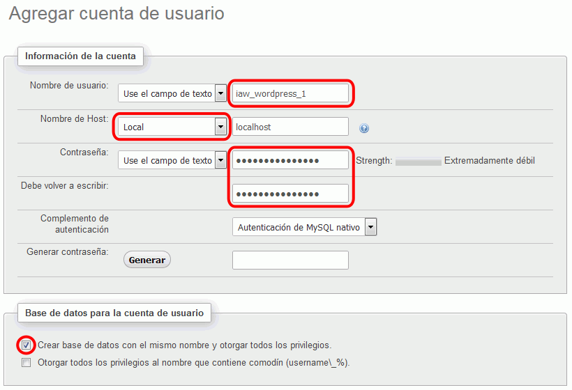
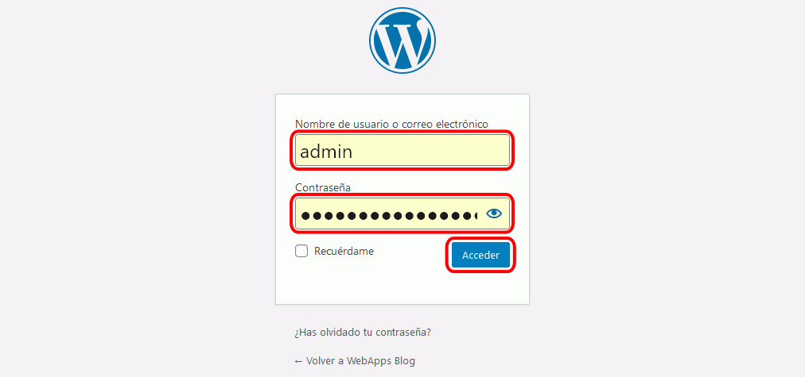
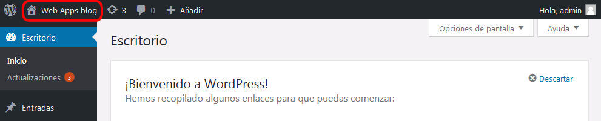
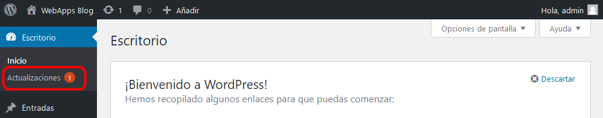
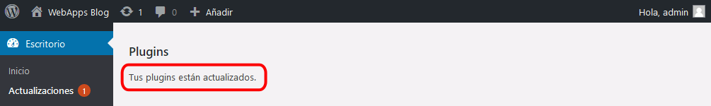
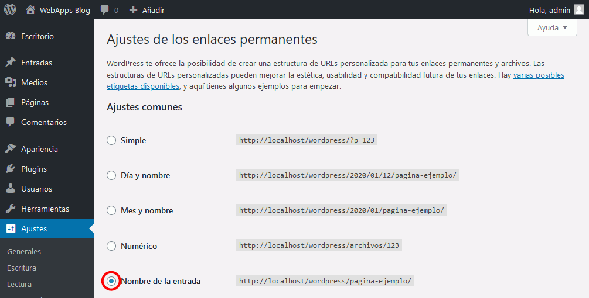
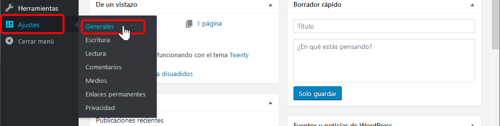
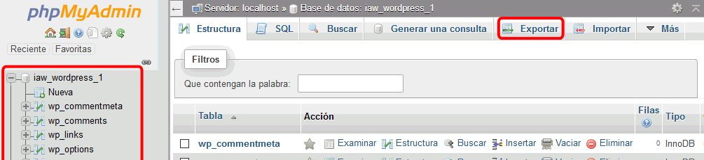

En esta lección se proponen soluciones detalladas de los ejercicios (1) de WordPress. Se recomienda intentar realizarlos primero sin recurrir a estas soluciones.
Algunas capturas están pendientes de actualizar a la versión WordPress 4.9.
Desde la página principal del sitio se puede descargar la última versión. Las versiones anteriores están disponibles en https://es.wordpress.org/releases/#older.
La última versión disponible actualmente (enero de 2019) es la versión 4.9.1, publicada en inglés el 29 de noviembre de 2018 (aunque el fichero disponible para descargar puede ser de una fecha posterior, ya que lo actualizan cuando se modifica la traducción al español). Esta lección está escrita para esa versión.
Como en un ejercicio posterior consiste en la actualización de WordPress, se recomienda instalar una versión anterior, por ejemplo la versión 4.9 en español, (versión inglesa publicada el 16 de noviembre de 2017). Se puede descargar de https://es.wordpress.org/wordpress-4.9-es_ES.zip.
Si la versión WordPress 4.9 (en español) ya no está disponible en la web del programa, puede descargarla desde la página de Descarga de aplicaciones.
Una vez descargado WordPress, simplemente se debe descomprimir en una carpeta accesible desde el servidor local.
WordPress se encuentra en la carpeta: Mis documentos > IAW Nombre-de-Alumno > Aplicaciones > wordpress
WordPress se abrirá en la dirección: http://localhost/nombre-de-alumno/webapps/wordpress/
WordPress (1) 2 - Instalar
Para poner en marcha un blog en WordPress:
Cree con phpMyAdmin un usuario de MySQL con nombre iaw_wordpress_1, contraseña iaw_wordpress_1 y base de datos iaw_wordpress_1.

Abra en el navegador la carpeta de Wordpress (http:/localhost/.../wordpress/) y complete la información de acceso a la base de datos:
Rellene la información necesario para crear el blog. Por ejemplo:
Título del sitio: Web Apps blog
Nombre de usuario: admin
Password: uno dos tres cuatro WordPress en sus recomendaciones sobre contraseñas aconseja utilizar gestores de contraseñas y en caso de no utilizar gestores de contraseñas, utilizar varias pabras comunes sin relación entre sí.
Tu correo electrónico: una dirección de correo real
Visibilidad para los buscadores: dejar desmarcado
Si no hay errores, el proceso termina en unos segundos y se muestra el formulario de entrada al panel de administración. Para entrar en el panel de administración escriba la contraseña del usuario admin
Para ver el blog como un usuario cualquiera, haga clic en el enlace "Volver a WebApps Blog". En los primeros segundos/minutos tras la instalación, mientras WordPress se actualiza automáticamente, se mostrará un mensaje de mantenimiento.
A los pocos segundos, se mostrará la página inicial predeterminada de WordPress:
Desplazando la página se mostrará una entrada de ejemplo:
Se debe abrir una página similar a esta:
Para cerrar la sesión, haga clic en el nombre de usuario (arriba a la derecha) y haga clic en "Cerrar sesión":
WordPress (1) 3 - Acceder como administrador
Para administrar el blog hay que hacer clic en el enlace Acceder de la página principal del blog
y escribir nombre y contraseña del usuario. Por el momento sólo está definido el usuario administrador con nombre admin y contraseña uno dos tres cuatro creado en el ejercicio anterior:

Se abrirá la pantalla de administración (denominado Escritorio):
Se puede volver al blog sin cerrar la sesión de administración haciendo clic en el icono de la casita:

Desde el blog se puede volver al Escritorio haciendo clic en el icono del indicador:
WordPress (1) 4 - Actualizar
Actualizar WordPress
En caso de que haya elementos actualizables (la aplicación, los plugins, los temas o las traducciones), en el Escritorio de WordPress se muestra el aviso de actualización disponible. El número que se muestra en el menú indica el número de actualizaciones disponibles (en la imagen siguiente, dos actualizaciones, aunque tras actualizar unos elementos pueden aparecer nuevas actualizaciones).
Haga clic en el enlace "Actualizaciones" para ver las actualizaciones disponibles.
Si hay una actualización de la aplicación, esta se muestra en primer lugar. Cuando se trata de una actualización menor (el tercer número en el número de versión), la actualización se realiza automáticamente, por lo que a veces no llegamos a verla.

Si no es necesario actualizar WordPress, se avisa al usuario.
Actualizar plug-ins
Seleccione los plug-ins a actualizar y haga clic en "Actualizar plugins".

En unos segundos se completará la actualización de los plug-ins.
Actualizar temas
Seleccione los temas a actualizar y haga clic en "Actualizar temas".
En unos segundos se completará la actualización de los temas.
Actualizar traducciones
Haga clic en "Actualizar traducciones".
En unos segundos se completará la actualización de traducciones.
WordPress (1) 5 - Alias
Incluya en httpd.conf el alias correspondiente:
<IfModule alias_module>
...
# 2017-01-30. Barto. Alias para WordPress
Alias /wordpress "ruta"
<Directory "ruta">
Options Indexes FollowSymLinks Includes ExecCGI
AllowOverride All
Require all granted
</Directory> ...
ScriptAlias /cgi-bin/ "C:/xampp/cgi-bin/"
</IfModule>
Para abrir el formulario de entrada, abra la dirección http:// ... /wp-login.php.
Abra el menú Ajustes > Generales:
Escriba la dirección que queremos utilizar (http://localhost/wordpress) en los campos "Dirección de WordPress (URL)" y "Dirección del sitio (URL)" y haga clic en "Guardar cambios".
WordPress (1) 6 - Enlaces permanentes (permalinks)
Abra el menú Ajustes > Enlaces permanentes:
Seleccione el formato "Nombre entrada" y guarde los cambios.

WordPress (1) 7 - Acceso desde otros ordenadores
Abra el menú Ajustes > Generales:

Escriba la dirección que queremos utilizar (http://AAA.BBB.CCC.DDD/wordpress/, donde AAA.BBB.CCC.DDD es la IP del equipo) en los campos "Dirección de WordPress" y "Dirección del sitio" y haga clic en "Guardar cambios":
WordPress (1) 8 - Cambio de IP
Si el servidor que aloja WordPress cambiara de IP, no se podría acceder al panel de administración de WordPress para modificar las direcciones de WordPress.
Abra con phpMyAdmin y corrija la IP en los dos registros de la tabla wp_options:
WordPress (1) 9 - Copia de seguridad manual completa
La copia de seguridad de los archivos del disco no plantea ninguna dificultad, por lo que no se hace aquí ningún comentario.
Con respecto a la copia de seguridad de la base de datos, sí que se comenta un detalle importante:
Al realizar la copia de seguridad de la base de datos con phpMyAdmin, antes de hacer clic en Exportar se puede haber seleccionado o no la base de datos:

Si al hacer la exportación se mantiene el método de exportación rápido predeterminado, si no se selecciona la base de datos, la copia de seguridad incluye las órdenes de creación de la base de datos, pero si se ha seleccionado la base de datos, no:
Nota: al hacer la exportación, en el método de exportación personalizado se puede elegir incluir la sentencia CREATE DATABASE.
En el segundo caso, para poder importar la copia de seguridad debe existir la base de datos. Si este ejercicio se ha hecho como usuario iaw_wordpress_1, la base de datos existirá puesto que ese usuario no puede borrar su propia base de datos. Si este ejercicio se ha hecho como usuario administrador y se ha borrado la base de datos, no se podría hacer la restauración en el segundo caso hasta crear la base de datos.


{kind=link}